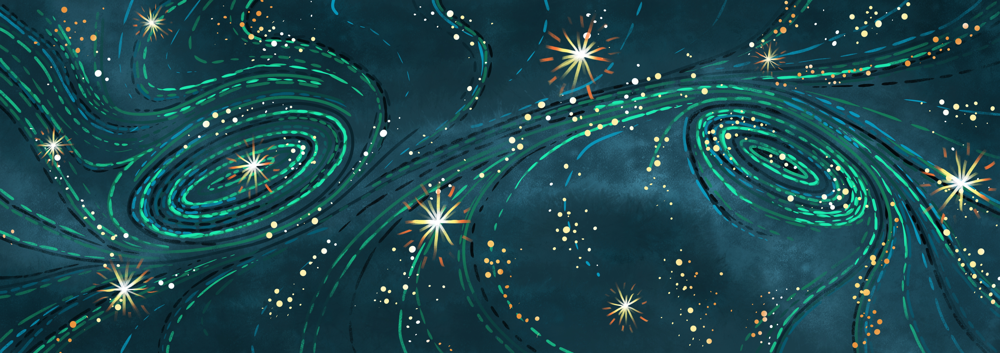

South Africa is the only country with a captive-bred lion (CBL) industry. It not only builds on exploitative and racist historical beliefs but conspiracy theories comparable to Republican and right-wing ideologies. Thus, South Africa is continuously shaped by neoliberal exploitation justified by values of human dominion.
When White people own all reserves and lodges while Black people work as their gardeners and house-maids, when White people contact Black people by shouting their names or by grumbling and banging heads to the side where they should approach, when Black people are intimidated and shy towards us European students, and when White people trivialize Apartheid as a system of respect and inclusion for all, one cannot constate the societal abolishment of racism after 31 years of its institutional ending in South Africa.
Similarly, White people feel dominion over animals in picking up bones for fighting, chasing away Cape Buffaloes from a waterhole by clapping hands just to have a sundow‐ ner, feeding birds and bushbabies to get them more used to humans, holding breeding camps that do cross-breeding between species, and studying, breeding or hunting animals to economically sustain the own reserve.
In my interviews with researchers, one made an interes‐ ting point that Afrikaans lion breeders are not only exploita‐ tive of animals but also of humans that look different enough for them. Indeed, racism and speciesism are greatly intertwined – especially Christianity (which is one major foundation of Afrikaners’ culture) seems to justify humans’ superiority to other animals.
My thesis and this article will predominantly talk criti‐ cally about White Afrikaans behavior on privately-owned land in South Africa while not trying to paint all African countries, entire South Africa or all Afrikaners with the same brush. Stereotypical narratives about the African con‐ tinent would suggest that the CBL-industry is another evi‐ dence for the failure of African countries to deliver su‐ stainable and ethical industries. With this article, I seek to give a more realistic understanding that hopefully makes some of you question their previous view on Africa. This case is unique, supported by powers outside of Africa too, and on top of that a legacy of our ancestors’ colonial impor‐ tation.
The case…
Breeding lions is unfortunately a reality in South Africa – and in South Africa only. The industry initiated during the last years of the Apartheid regime under the guise of saving the wild lion population. To date, every supporter of the in‐ dustry and all Afrikaans hunters that I talked to still share this argument. In reality, the African wild lion population has declined by half in the last 25 years while, interestingly, captive lion breeding facilities have increased exponentially at the same time. In South Africa, the number of about 8.000-10.000 captive lions outruns the number of wild lions by three times. From the beginning of my research, I have always characterized the CBL-industry as the clearest case of a wild species’ exploitation. This becomes evident when one pictures the typical life cycle of a captive-bred lion:
 Fig. 1: A young lion in a fenced enclosure of a captive
breeding facility in South Africa.
Fig. 1: A young lion in a fenced enclosure of a captive
breeding facility in South Africa.
- Cubs get ripped from the mother a few days after giving birth to get her into oestrus again quickly. After‐ wards, lions are hand-raised sometimes by foreign tourists who have been lured into doing conservation work, and live in small enclosures without the ability to exert their natural behavior.
- Walking safaris are offered claiming to give real in‐ sights into lions’ lives.
- The hunting takes place under the guise of fair- chaise tracking and killing, but is actually enabled through baiting, drugging, small fenced areas and the lions’ already established connectedness to humans.
- Finally, after the kill, lion bones and skins are incre‐ asingly traded to Southeast Asia for traditional medicine.
Most farms offer multiple purposes for lion interaction, for instance cub petting and walking with lions. On the other hand, the majority of farms also cooperate with other farms and trade lions at different development stages. Thus, a perceived “ethical” farm (hunters in my interviews distin‐ guished between ethical and unethical farms based on the size of enclosures and feeding procedures etc.) most certainly interacts with a perceived “unethical” farm. The argument of just erasing the ‘bad apples’ in the industry therefore cannot have a hold.
Besides the lack of conservation value and the complete cruelty in the practice, opponents fear the entire South African tourism reputation to be enormously harmed by the bad publicity from the CBL-industry. This went so far that even professional trophy hunters distanced themselves from the practice and hunting organizations supporting it. Still, I fear that it is going to be a tough run until the industry is finally closed down. This is, first, due to the complete neglection of compromise from Afrikaans lion breeders, second, due to their external financial and lobbying support from the US, and third, due to the South African government’s own failures.
The victim mentality…
It is paradoxical when White people in South Africa feel “left out” although they are still very much privileged compared to other local and indigenous groups. Interestingly, exactly those policy decisions that try to reduce the high inequality or other colonial and Apartheid legacies lead to White Afrikaners’ retreat.
But why shouldn’t they? When Apartheid was a “great regime” and its policies of having separate “homelands” for Black people and White people was “a sign of respect for each culture”, and when breeding lions in farms is more sustainable than the nomadic lifestyle of Black people, then there is nothing that would need to be changed, right?
Unfortunately, however, Black people were expelled from their land and did neither have inclusion in education nor hospitals, and the CBL-industry is neither sustainable for the species nor for nature in general or the people working for it. In fact, it is such a popular argument that the industry MUST be maintained because Black people are working for it – what would happen to the people that so desperately need jobs otherwise!? Again, this argument is easy to be removed: Black workers are equally exploited, other more sustainable ecotourism industries would bring more sustainable jobs, the “job argument” does not at all justify the exploitation and cruelty in the industry, and Black people must not be put into boxes of inferiority and the sole need for jobs.
Post-colonial theory
Post-colonial theory is a critical framework that analyzes the pervasive cultural, political, and psychological legacies of European colonialism. It focuses on deconstructing Western discourses that justified imperialism, recovering the suppressed voices and agency of the colonized (the 'subaltern'), and examining the ongoing power imbalances and hybrid identities that characterize the modern, globalized world.
Multiple decades of Othering, both between humans themselves and between humans and animals, have resulted in White people’s perception of “might is right”. Its restriction makes White people feel restricted in their identity – because they indeed built their identity on the exclusion of others.
The neocolonial paradox…
Maybe one could even go so far and call it a culture of exclusion under the guise of contributing to equality. A culture of breeding and hunting lions that – in the eyes of supporters – should be accepted because it is their culture. The question is: Can a practice that is only supported by a few, that was actually imported by colonists and that only benefits those already on the upper part of the food chain be classified as culture? And even if so, is this a sufficient reason for it to be protected from criticism? Several scholars and my interviewees reveal the point that this cultural relativism cannot legitimize exploitative practices and moreover not equalize criticism from European countries with neocolonialism.This, however, is a major argument from hunters and breeders who weaponize usually justifiable accusations of neocolonial interventionism as protection of their own neocolonial practice. While this is completely paradoxical, this line of reasoning does find appeal in the South African government. The weaponization furthermore serves as a justification for breeders and the whole industry to retreat from any negotiation.
Othering
The concept of ‘Othering’ was first applied systematically to the relationship between the West (the "Occident") and the East (the "Orient") in Edward Said’s seminal work ‘Orientalism’ (1978). It can be defined as the discoursive praxis of constructing an ‘out-group’ that critically discerns ones own ‘in-group’ through negative or inferior traits. This process was not merely prejudicial but was a disciplined cultural and academic practice that enabled and justified political domination.
But they can also afford to do that – both from an emotional and a financial point of view. While the power of “Greenies” (their calling for animal welfare NGOs in Europe) is highly exaggerated, their own financial and lobbying resources still fall much more into weight, especially when it comes to policy implementation. Although public pressure may have intensively strengthened animal welfare values in the South African government’s considerations, the wealth of the hunting industry stems from its support by the US where most big hunting organizations are situated and outstands the financial possibilities of the South African government.
Due to corruption, weak institutions and little cross-departmental collaboration, there is little to no chance for the government of winning a court case against the hunting industry – which would definitely take the case to court once it is issued. And no, this does not make South Africa a “failed state” (can we please start questioning such terms?), but rather it is institutional legacies from colonization. With Apartheid, South Africa has experienced another autocratic political system from which institutions need time to recover.
The parallels…
A policy change may even become more difficult with Trump’s re-election. Recently, he has offered refuge for White Afrikaners to the US while banning refuge statuses for most other countries. Both Republicanism in the US and right-wing extremism in Europe not only seem to be similar but are historically intertwined and related to the victim mentality from White Afrikaners in South Africa. Fearing to become “extinct” (White Genocide theory), either by perceived power shifts to People of Colour, migrants or equivalent “others” is prevalent in people who are very much set in their perspective on the world. Democracy, however, needs people who question their beliefs, who look outside their respective boxes, and who are open for changes in a world that is changing faster than ever.
As long as those ideologies, postcolonial governmental features, and geopolitical tendencies with Asia persist, the CBL-industry may not be stopped soon. On the contrary, there is an increase in breeding farms of other predatory animals – predominantly tigers who count as an exotic species in South Africa and therefore fall under even less restrictive legislations than endemic South African wildlife species. Furthermore, a “wildlife economy of sustainable use” starts to flourish, giving a new domain to the greenwashing argument of sustainability in hunting and trading wildlife.
Let’s talk…
Political change takes time. As a single individual, it is nearly impossible to speed up processes which are shaped by historical path dependencies and geopolitical powers. This is frustrating and it is okay to feel that way. For our own motivation, let’s accept that and continue fighting for what is right – in our own pace and potentially even more for our own sanity than for anyone else. Let’s talk about the CBL-industry and everything else you wish to change. Public pressure can have major impacts on policy changes. Let’s stop supporting breeding and hunting farms and let’s start questioning what they really are. Rather book a guided safari in the real African bush – you will get much more out of it, trust me.